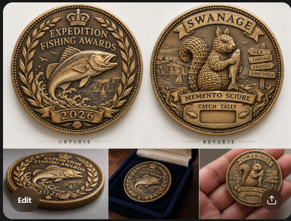

The awards got out of hand
The plan was to make three small fishing trophies. The stronger idea was to treat modest, strange or adjacent achievements with the solemnity of a civic monument.
One award celebrates the weirdest fish, centred on a surmullet. Another, Present at Events, commemorates the indisputable achievement of having been there and contributed with heroic ambiguity. A third award remained open while the visual language developed.
The squirrel returns
The trip was already connected to Memento Sciure, an earlier project built around a ceremonial wicker squirrel. That creature returned on the commemorative token: upright, faintly ominous and holding a fish with the dignity of a private heraldic device.
The artwork above is the selected design study for that connection. It is useful evidence of the intended object, but it is still artwork—not a photograph of a minted medal, a finished print or a completed trophy set.
Designed before dinner, printed somewhat later
The visual designs moved quickly. Production did not. The surmullet and Present at Events progressed into engineering packages and printable proofs, while the full set, presentation and finishing remained behind the original celebratory timetable.
That delay is part of the honest record. The project has real design and engineering work behind it, but this page does not quietly turn previews into completed objects.
Personal trip photographs and identifiable likenesses stay out of this public record. The published image is design artwork for the Memento Sciure token and is labelled accordingly.
← Back to the cabinet